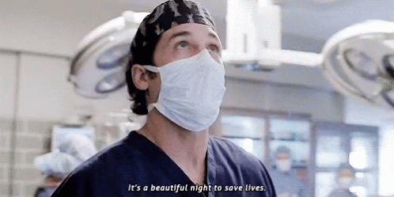

Quem ele é?
Derek Shepherd foi um neurocirurgião renomado , ex- chefe de neurocirurgia e diretor do Gray Sloan Memorial Hospital. Ele era casado com Meredith Gray e eles têm duas filhas, Zola e Ellis , e um filho, Bailey . Ele morreu devido aos ferimentos após ser atropelado por um caminhão.
Infância
Derek passou a maior parte de sua vida antes de sua chegada em Seattle, na cidade de Nova York. Derek e suas irmãs
frequentaram uma pré-escola francesa. Quando criança, Derek não tinha produtos para o cabelo, então ele tinha um grande
cabelo afro, acne, pesava 50 quilos e tocava saxofone na banda da escola. Ele foi criado por uma mãe solteira, Carolyn,
junto com suas quatro irmãs: Nancy, Kathleen, Liz e Amelia. Como Derek, todas as quatro irmãs são médicas. Seu pai era
dono de uma loja quando era mais jovem, e um dia dois ladrões o abordaram e exigiram que ele entregasse o relógio que
sua esposa Carolyn havia economizado incansavelmente para comprar para ele. Quando ele se recusou, os ladrões o mataram
a tiros, com Derek e sua irmã mais nova Amelia testemunhando sua morte enquanto se escondiam nos fundos da loja. Este evento
é uma grande parte de Derek e, conseqüentemente, pode tê-lo inspirado a se tornar um cirurgião para ajudar a salvar vidas.
Como resultado, ele é especialmente cínico ao tratar criminosos e sente que eles não merecem nenhuma compaixão da parte
dele.
Enquanto estava no colégio, Derek jogou hóquei. Um dia, ele empurrou seu amigo contra a parede e seu amigo se machucou, mas
se levantou e continuou a jogar. Não foi até o dia seguinte que ele descobriu que desenvolveu um sangramento cerebral.
Ele foi deixado em estado vegetativo para o resto de sua vida. Todos os meses, Derek enviava dinheiro para a mãe de seu amigo
para ajudar a pagar seus cuidados de longo prazo.

O melhor amigo de infância de Derek foi Mark Sloan, que veio de uma família mais rica, mas emocionalmente deficiente, e
era como o segundo filho da família Shepherd.
Derek costumava andar de moto, mas depois de um acidente que lhe deixou uma cicatriz, ele parou de fazer isso.
Derek foi para o Bowdoin College, no Maine, durante seus anos de graduação. Ele então frequentou o Colégio de Médicos e
Cirurgiões da Universidade de Columbia com Addison e Mark. Durante sua educação médica, Derek foi ensinado por Richard
Webber.
Algumas Curiosidade
Derek tocou saxofone em sua banda do colégio. Ele também tocava violão; Ele tinha uma cicatriz na testa de um acidente de motocicleta; Ele tinha uma queda por balsas; Ele dirigia um Porsche Cayenne; Quando ele se mudou para Seattle, as enfermeiras do andar o descreveram como "colírio para os olhos em um jaleco"; Ele era freqüentemente visto como extremamente protetor com suas irmãs, especialmente Amelia; Derek tinha cinco tipos de toucas de esfrega, e a sua favorita representava balsas; Ele tinha um alto risco de câncer de fígado, câncer de próstata, calvície e dependência de heroína; Na primeira temporada, o jaleco de Derek não mostrava as letras pós-nominais do FACS; Em Almost Grown e These Arms of Mine, há cenas que mostram Derek vestindo seu jaleco de "Chefe de Cirurgia", apesar de não estar mais no cargo na época; Em Voo, Cristina tenta manter todos conscientes, mas é mostrado que Derek está dormindo e sonhando com balsas, já que sua resposta a Cristina é "barcos"; Antes da cirurgia, Derek costumava dizer: "É um lindo dia para salvar vidas."; Ele sentia falta de seu pai a cada segundo de cada minuto de cada dia.